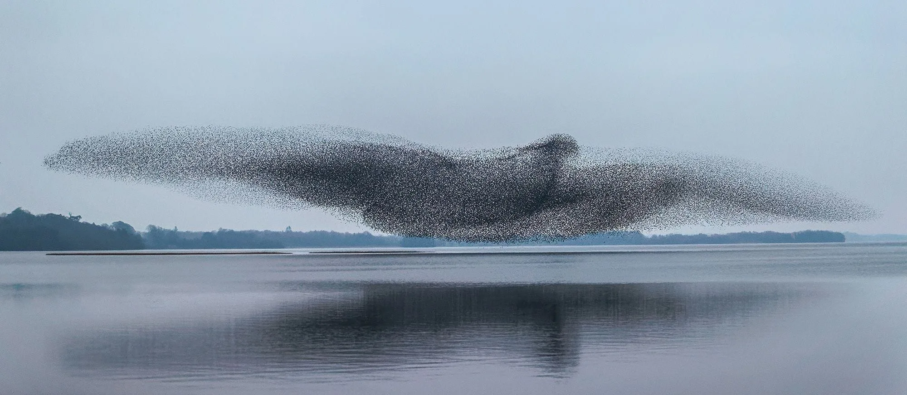

Emergent Properties
On emergent properties of Nature and Intelligence.

I was reading this book about Nvidia by Stephen Witt. It covers a lot of things, including works that brought AI out of its winter phase. I read the chapter on Transformers, and it really struck me how this all began, and where we are now.
Humans really have hard time dealing with emergent properties. It’s not intuitive to us. In almost every case, we don’t realize it until it happens. At the fundamental, everything is surprisingly simple. And nature does seem to favor simplicity. But as those simple things combine, something new emerges that is far more complex than the parts themselves.
There’s physics at the base level. Then chemistry emerges from physics at scale. Biology emerges from chemistry at scale. And somewhere at the top, we get consciousness, which is one of the highest-level emergent property we know. There’s no way you could predict consciousness just by looking at physics alone. You can’t predict happiness, sadness, love, sexual desire, jealousy, or spirituality from physics, chemistry, or even biology alone. Each level is just following its own simple rules. And yet entirely different things like experience, feelings, consciousness, and spirituality shows up at the top.
At the core, Transformer-based models(like ChatGPT) is also surprisingly simple. Instead of predicting an entire sentence, it just predicts the next sub-word or word at a time. In the industry, these are called “tokens.” That’s it basically.
And yet this simple idea is powering the entire AI revolution. As you give these models more data and more compute, the outputs become dramatically better. That’s the emergent property. Back in 2017, almost nobody believed that simply predicting the next token could lead to powerful systems we have today. It’s almost impossible, except few edge cases, to fool the best AI models today. And these are only going to get better from here.
So if predicting the next token at scale can produce intelligence this powerful, how can we confidently say this is not a path to AGI? this won’t make machines sentient one day? Maybe it will. Maybe it won’t. Some experts say this approach will never reach AGI. But also, there are experts saying this absolutely could.
I’m not an expert here. But what I do know is that nobody in 2017 could have predicted we’d have AI this powerful just from predicting the next token. And I also know that humans are really bad at reasoning about emergent properties. If intelligence this powerful can emerge from that at scale, it’s hard to confidently say superintelligence can’t emerge from the same process pushed much further.
You can’t see consciousness from physics, chemistry, or biology level.